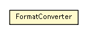

se.cambio.cds.openehr.view.util
Class FormatConverter

java.lang.Object
 se.cambio.cds.openehr.view.util.FormatConverter
se.cambio.cds.openehr.view.util.FormatConverter
public class FormatConverter
- extends Object
- Author:
- icorram
| Methods inherited from class java.lang.Object |
clone, equals, finalize, getClass, hashCode, notify, notifyAll, toString, wait, wait, wait |
FormatConverter
public FormatConverter()
toInt
public static Integer toInt(String str)
throws Exception
- Throws:
Exception
toDouble
public static Double toDouble(String str)
throws NumberFormatException
- Throws:
NumberFormatException
toComaDouble
public static String toComaDouble(String str)
throws NumberFormatException
- Throws:
NumberFormatException
toShort
public static Short toShort(String str)
toBoolean
public static Boolean toBoolean(String str)
getEdad
public static Short getEdad(Calendar fechaNac)
toString
public static String toString(Properties properties)
toCalendar
public static Calendar toCalendar(Date date)
toCSVString
public static String toCSVString(Calendar fecha)
toDate
public static Date toDate(Calendar cDate)
toSorteableString
public static String toSorteableString(Calendar fecha)
toStdMinString
public static String toStdMinString(Long time)
toStdHourString
public static String toStdHourString(Long time)
toStdDiaString
public static String toStdDiaString(Long time)
toStdString
public static String toStdString(Calendar fecha)
toStdString
public static String toStdString(Date fecha)
toStdStringWithHour
public static String toStdStringWithHour(Calendar fecha)
toStdStringWithHour
public static String toStdStringWithHour(Date fecha)
anhosTranscurridosEntre
public static long anhosTranscurridosEntre(Calendar time1,
Calendar time2)
toCalendar
public static Calendar toCalendar(String date)
throws InternalErrorException
- Throws:
InternalErrorException
toCalendar
public static Calendar toCalendar(String date,
String delimChar)
throws InternalErrorException
- Throws:
InternalErrorException
mesesTranscurridosEntre
public static long mesesTranscurridosEntre(Calendar time1,
Calendar time2)
diasTranscurridosEntre
public static long diasTranscurridosEntre(Calendar time1,
Calendar time2)
- Devuelve la cuenta de d�as descontando del n�mero de meses y a�os que
las fechas se llevan de diferencia
- Parameters:
time1 - time2 -
- Returns:
- los d�as entre una fecha y otra, sin contar meses y a�os
mismoDia
public static boolean mismoDia(Calendar fecha1,
Calendar fecha2)
isBirthday
public static boolean isBirthday(Calendar fecha)
diasDeDiferencia
public static int diasDeDiferencia(Calendar fecha1,
Calendar fecha2)
textoSinPuntuacionMin
public static String textoSinPuntuacionMin(String str)
Copyright © 2013 Cambio. All Rights Reserved.